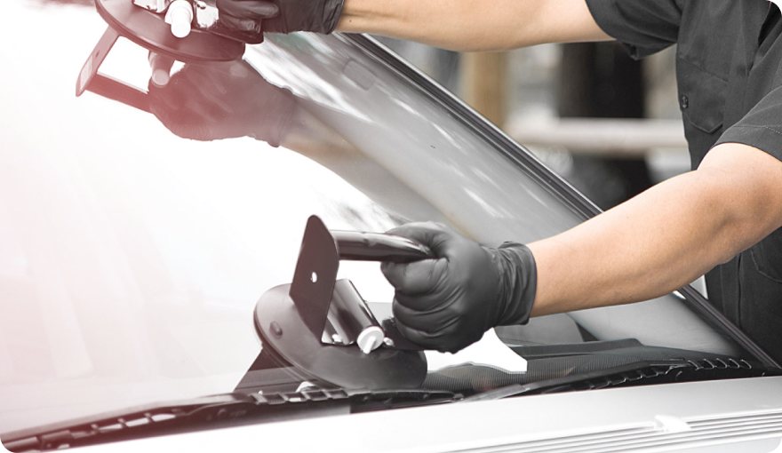

Особенности установки автостекол в различные модели автомобилей
Автостекла — это одна из самых уязвимых частей автомобиля. Стекла первыми страдают в ДТП, еще в них попадают мелкие камешки и пыль во время езды. Если вы долго пользуетесь автомобилем, рано или поздно перед вами встанет вопрос замены одного или нескольких стекол. Особенности установки автостекла зависят от модели машины. Разберемся в особенностях замены автомобильных стекол и для чего они вообще нужны.
Функции и задачи лобового стекла в автомобиле
На первых моделях автомобилей, которые ездили медленно и не предлагали водителю и пассажирам современного комфорта,
стекла вообще не устанавливались. По мере развития автомобилестроения машины получили сначала ветровые щитки, а затем
и полноценные ветровые стекла. Массовую установку стекол автомобили получили только в 1920-х годах.
Лобовое стекло также часто называют «ветровым», так как одна из первых его задач — защищать водителя и пассажиров от
потоков воздуха, пыли и насекомых. Но с развитием технологий возможности и функции переднего стекла на авто
увеличились, поэтому за ним закрепилось название «лобовое».
Лобовое стекло нужно, чтобы:
- защитить водителя и пассажиров от встречных потоков воздуха;
- защитить от насекомых, пыли, камешков из-под колес других автомобилей;
- изолировать от холода и посторонних шумов;
- повысить аэродинамические качества машины.
Особенности установки автомобильного стекла в том, что оно считается высокотехнологичным элементом современного автомобиля. На стекла устанавливают антенны, видеорегистраторы. На стекла проецируются показания бортовых приборов. Автостекло защищает водителя и пассажиров от солнечных лучей и салон от перегрева благодаря инфракрасному фильтру.
Как устроено современное лобовое стекло
Современные лобовые стекла намного прочнее и функциональнее, чем их предшественники — ветровые стекла.
Стекла делятся по технологиям производства:
- триплекс — два слоя стекла, между которыми находится полимерная пленка;
- многослойное стекло — аналогично триплексу, но с большим числом слоев;
- сталинит — закаленное стекло.
Сталинит уже не используют в производстве лобовых стекол, только задних и боковых. Лидирует на рынке триплекс. Полимерная пленка внутри него увеличивает прочность материала. Она предотвращает осыпание в случае аварии и увеличивает эластичность.
Способы установки лобовых автостекол
Особенности установки автостекол предполагают два способа: при помощи клея или резинового уплотнителя.
Резиновые уплотнители широко применялись в отечественных автомобилях советского производства. Это простой и доступный
способ. Раньше водители нередко меняли стекла сами, так как монтаж с резиновым уплотнителем не требует никакого
специального оборудования. В этом случае достаточно извлечь старое стекло, смазать края нового незастывающим
герметиком и плотно вжать в уплотнитель из резины. После этого уплотнитель затягивают, а иногда фиксируют молдингом с
внешней стороны стекла.
Вклеивание автомобильного стекла — современный способ. Разница в установке заключается в том, что никакие уплотнители
для монтажа не требуются, а незастывающий герметик заменяют специальным герметизирующим клеем. Застывая, он прочно
фиксирует автостекло в проеме кузова. Особенности установки лобовых стекол автомобилей делают этот метод не только
более долговечным, но и безопасным.
Как происходит замена лобового стекла
Лобовое стекло меняют чаще всего — именно оно принимает на себя основную нагрузку от потоков ветра, летящих навстречу
пыли и мусора. В отличие от боковых стекол, которые страдают преимущественно от хулиганов и угонщиков, лобовое может
быть повреждено в ДТП или прийти в негодность из-за сколов и трещин.
Процедура замены выполняется только в автомастерской. В отличие от классического монтажа на резиновый уплотнитель, когда
водитель с парой помощников мог выполнить все работы в гараже, монтаж клеем-герметиком требует специального оборудования
и строгого соблюдения регламента. Мастер, выполняющий процедуру, должен хорошо знать особенности установки стекол на
модели авто, быть аккуратным и внимательным.
При замене автомобильного стекла крайне важно соблюдать технологию на всех этапах проведения работ. Мастера работают по
строго установленному алгоритму:
- Подготавливают автомобиль — накрывают салон специальными чехлами, чтобы защитить его от загрязнений. При необходимости кузов автомобиля закрывают плотным материалом.
- Демонтируют старое стекло — снимают дворники, зеркало заднего вида, антенны и дополнительные аксессуары. Стекло срезают и вынимают из проема.
- Готовят проем к установке стекла — убирают старый клей и мусор, обезжиривают поверхности. Для лучшего прилегания наносят специальный праймер. Когда праймер просох, наносят клей по всему периметру проема.
- Устанавливают стекло — когда стекло зафиксировано, зеркало заднего вида, стеклоочистители и аксессуары возвращают на места.
- Готовят автомобиль к передаче владельцу — из салона удаляют защитные чехлы, при необходимости очищают кузов и салон.
Важные моменты. Чтобы новое стекло дольше сохранило безупречный внешний вид, автолюбители советуют после замены поставить новые щетки стеклоочистителей. Изношенные щетки могут создавать на поверхности микроповреждения, и тогда стекло придется полировать. Автомобиль можно использовать уже через час после окончания работ, но в первые три дня нужно быть осторожным. Посещать автомойки не рекомендуется — вода под большим давлением может нарушить клеевой слой. Парковаться лучше на ровном месте, чтобы исключить кручение кузова и клей высыхал равномерно.